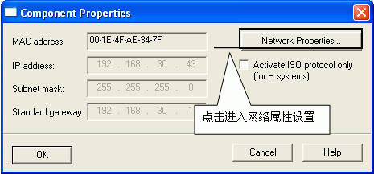
图8．进入PC 网卡参数设置
选择本地连接，通过右键菜单进入属性，如图9所示。

图9．选择本地连接local properties
选择TCP/IP属性，如图10所示。

图10． 进入TCP/IP 属性Internet properties
定义网卡地址，如图11所示。
硬件：
① S7 1200 CPU (6ES7 212-1HD30-0XB0) V2.2
② PC （带普通以太网卡）
③ TP线(网线）
软件：
① STEP 7 PRO V11 SP2 UPDATE4
② SIMATIC NET V7.1 SP2
1．在 TIA V11 中新建项目，组态PC Station。
打开 TIA V11 并新建一个项目：“S7-1200_OPC”，通过“添加新设备”>“PC 系统”>“常规PC”插入一个PC站，PC站的名字为：“SIMATIC PC Station(1)”。如图1所示。
注意：TIA V11 中PC Station的名字“SIMATIC PC Station(1)”要与SIMATIC NET 中“Station Configuration Editor”的“Station Name”完全一致，才能保证下载成功。
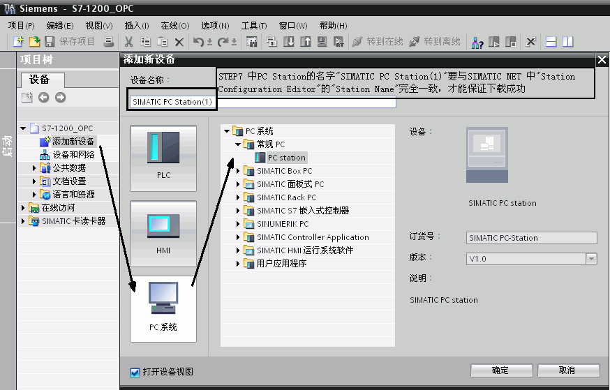
图1．插入并组态PC 站
2． 双击“设备组态”即可进入PC Station硬件组态界面。
在第一个槽中，从“用户应用程序”，选择“OPC服务器”添加一个OPC Sever 的应用。
在第三个槽中，从“通讯模块” >“PROFINET/以太网”下，选择IE General，并设置IP 地址，如图2所示。
注意：因为使用的是普通以太网卡，所以要选择添加“IE General”。
通过选中 “OPC服务器”-->右键-->选中“更改设备类型”，可选择其他版本OPC服务器,
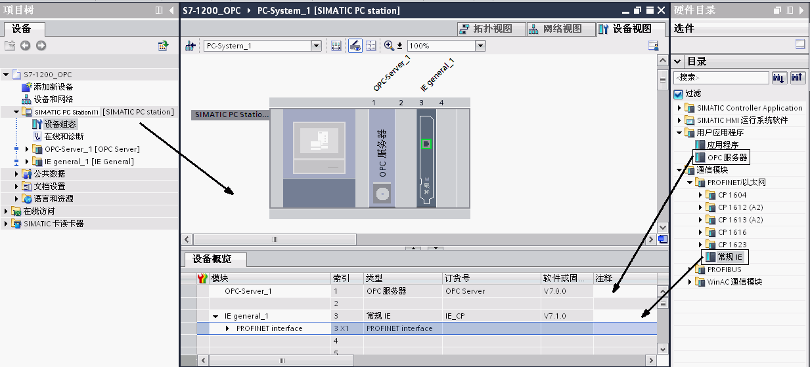
图2．PC Station的硬件组态
然后配置网卡地址并新建一个以太网，如图3所示。
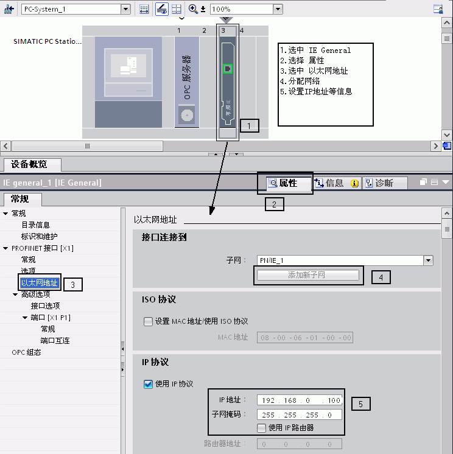
图3．设置以太网地址
完成PC站硬件组件设置后，按下编译存盘按钮，确定且存储当前组态配置。
3． 配置网络连接
通过点击“网络视图”的图标，进入网络配置，然后在网络视图设置连接，添加S7连接，详见图4中的1~5步所示。
直接选中S7-1200PLC 建立S7连接
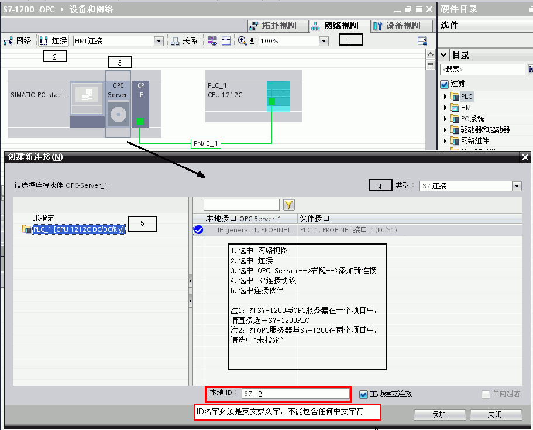
图4．建立连接及定义连接属性
添加完成连接后，在连接视图中将会有连接指示，如图5上半部分。
通过选中“未指定”方式配置连接参数
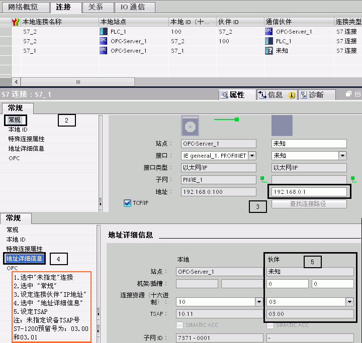
图5． 设置 S7 连接属性及TSAP地址Connection properties， TSAP
确认完成所有配置后，已建好的S7连接会显示在连接列表中。点击编译存盘按钮或选择“Network”>“Save and Compile”，如得到No error的编译结果，则正确组态完成。这里编译结果信息非常重要，如果有错误信息（error Message），说明组态不正确，是不能下载到PC Station中的。
成功编译完成后，在 TIA V11中的所有PC Station的硬件组态就完成了。
通过“Station Configuration Editor”创建一个虚拟的PC Station硬件机架，以便在 TIA V11 中组态的PC Station 下载到这个虚拟的PC Station硬件机架中去。
1. 进入PC Station硬件机架组态界面
点击右下角的图标 Icon PC Station，进入PC Station硬件机架组态界面。
2. 添加OPC Server
选择第一号插槽，点击Add按钮或鼠标右键选择添加，在添加组件窗口中选择OPC Server，如图6所示。
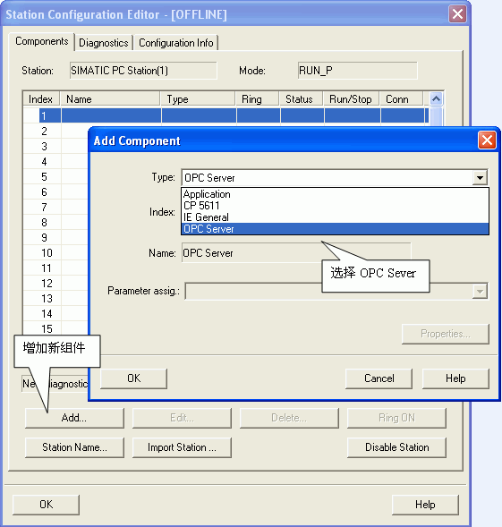
图6． 插入OPC Server
3. 添加组件窗口中选择IE General
选择第三号插槽，点击Add按钮或鼠标右键选择添加，在添加组件窗口中选择IE General，如图7所示。
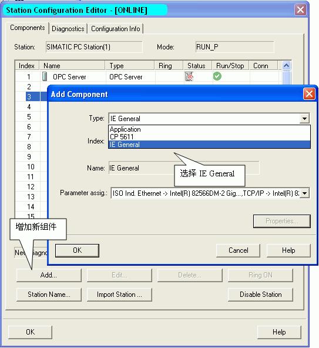
图7．插入IE General insert IE general
注意：TIA V11 中的PC Station硬件组态与虚拟PC Station硬件机架的名字、组件及“Index”必须完全一致。
4. 网卡参数配置
插入IE General后，随即会弹出组件属性对话框。点击Network Properties，进行网卡参数配置，如图8所示。
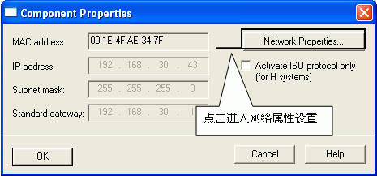
图8．进入PC 网卡参数设置
选择本地连接，通过右键菜单进入属性，如图9所示。
图9．选择本地连接local properties
选择TCP/IP属性，如图10所示。
图10． 进入TCP/IP 属性Internet properties
定义网卡地址，如图11所示。

图11．置网卡地址PC IP
5. 命名PC Station
这里的“PC Station”的名字一定要与 TIA V11 硬件组态中的“PC Station”的名字一致，如图12所示。

图12．命名PC STATION Station name
1．下载硬件组态及网络连接
在 TIA V11软件中，通过选中 “下载” 图标，进入设置界面，如图13所示。
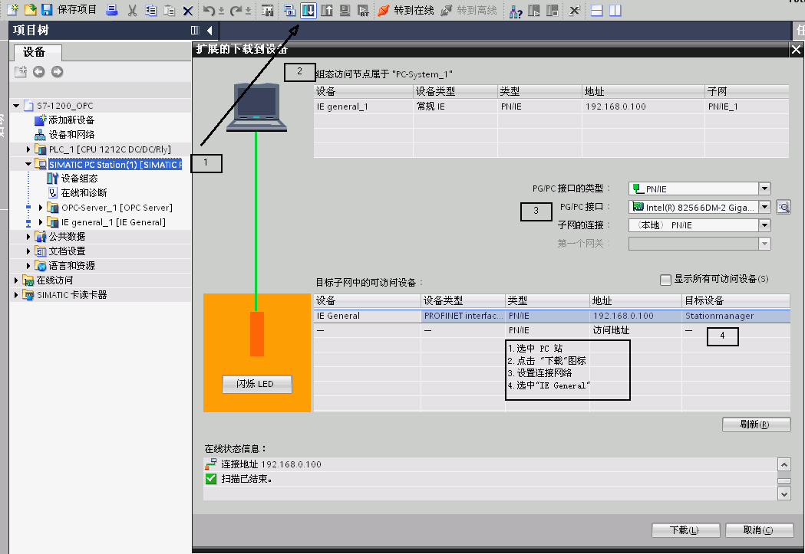
图13．设置下载页面
2．在 TIA V11 将硬件配置及网络连接下载到“Station Configuration Editor”。
3．网络已经建立成功标识。
下载完成后在“Station Configuration Editor”中状态显示，如图14所示。在编程过程中，可以根据这些状态显示进行判断组态是否正确。
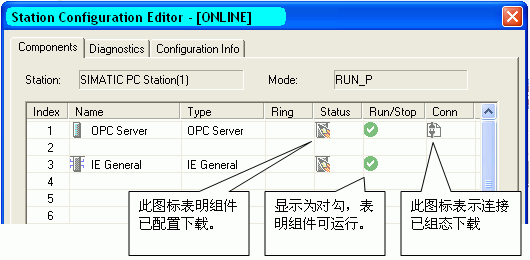
图14．下载完成后的状态Station Editor online
SIMATIC NET自带OPC Client端软件 OPC Scout，可以使用这个软件测试所组态的OPC Sever。通过点击左下角的“Start”>“Simatic”>“SIMATIC NET”>“OPC Scout”启动进行测试。
1．新建变量组
双击OPC.SimaticNET，新建一个组并输入变量组的名称，例如S7-1200 。如图15所示。

图15． 创建一个新的变量组
2．添加变量
选择一个数据，点击“S7:”>“S7 connection_1”>“objects”>“M”>“New Definition”来添加一个变量，并为变量选择数据类型、起始地址、数据长度，并添加到右侧窗口中。如图16所示。

图16． 添加变量
 注意：如果访问数据为DB块，在创建DB块时必须选择 “与S7-300/400兼容类型”，不能选择“已优化"方式（符号寻址），单方S7通信只支持绝对寻址的DB块。
注意：如果访问数据为DB块，在创建DB块时必须选择 “与S7-300/400兼容类型”，不能选择“已优化"方式（符号寻址），单方S7通信只支持绝对寻址的DB块。
3． 观察通信结果及质量，如图17所示。
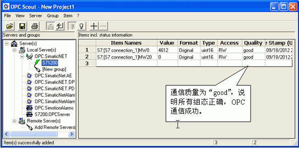
图17．检查通信结果
 注意：如果通信质量为“bad”，则说明通信失败，需要检查软件组态及硬件连接是否正确。
注意：如果通信质量为“bad”，则说明通信失败，需要检查软件组态及硬件连接是否正确。
 如何在 OPC Scout 中添加 DB 区数据变量？
如何在 OPC Scout 中添加 DB 区数据变量？
答：在 OPC Scout中添加变量时，DB 数据没有添加变量的选项，如图18所示。
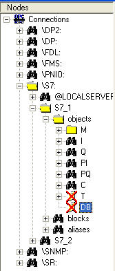
图18．无法添加 DB 数据
如果要添加数据区需要先添加 I 区或 M 区数据,然后修改成 DB 区数据，添加步骤如图19所示。

图19.在 OPC Scout中添加 DB 数据的步骤
观察 DB 通信结果及质量，如图20所示。
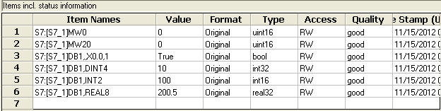
图20. OPC scout数据监控
S7-1200 DB块监控状态，如图21所示。
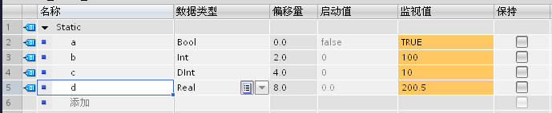
图21. DB 结果及质量
 如何在 OPC Scout 中添加不同数据类型的 DB?
如何在 OPC Scout 中添加不同数据类型的 DB?
答: 添加不同 DB 数据类型的表达形式如下：
BOOL ：DB1，X0.0，1
BYTE : DB1，B10，1
WORD : DB1，W20，1
DWORD: DB1，D30，1
INT : DB2,INT40,1
DINT : DB2,DINT50,1
REAL ：DB2，REAL60，1
 在 OPC Scout 中为什么可以访问到 I,Q,M 等数据,却唯独不能与 DB 通信?
在 OPC Scout 中为什么可以访问到 I,Q,M 等数据,却唯独不能与 DB 通信?
答: 在创建DB块时,缺省的属性设置为"只支持符号寻址"即“已优化” ,这就造成OPC无法访问 DB 的绝对地址,造成通信错误。为了避免通信错误，创建DB块时，一定不要勾选"只支持符号寻址"。正确的设置如图22所示。
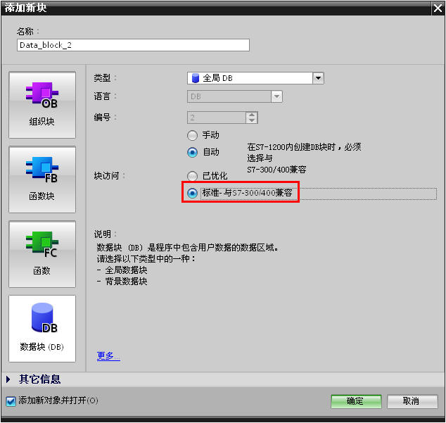
图22. 选择 标准-与S7-300/400兼容